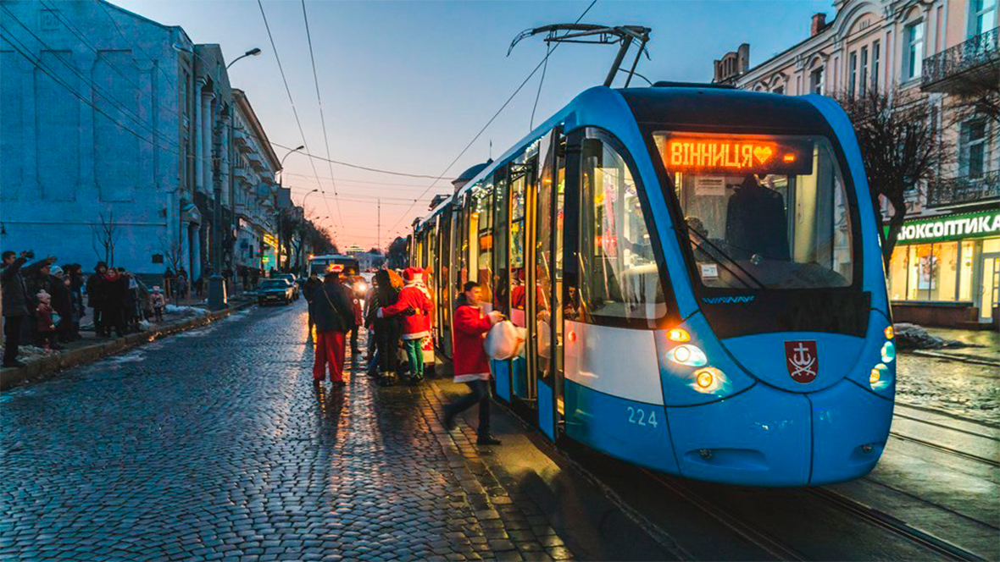
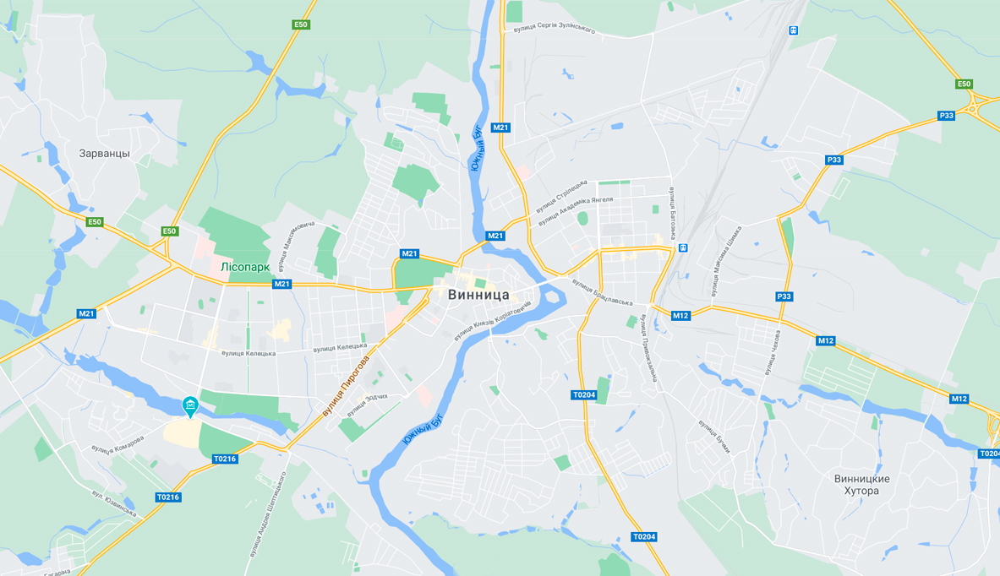

Вінниця 24/7
Пошук
Усі пам’ятки
Усі топові місця Вінниці в один клік
Обирай, натискай і подорожуй!
Усі топові місця Вінниці в один клік
Обирай, натискай і подорожуй!

Усі топові місця Вінниці в один клік
Обирай, натискай і подорожуй!

Пошук по вулицям
Вулиця Князів Коріатовичів
Вулиця Миколи Оводова, 20
Вулиця Мічуріна, 32
Вулиця Андрія Первозваного
Вулиця Мури, 12
Вулиця Андрія Первозваного
✖
Пошук
Знайти